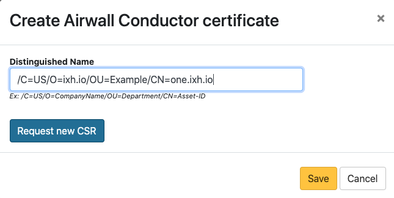

Install Let's Encrypt Certificates on a Conductor
How to install a Let's Encrypt Conductor SSL certificate.
Note: If you want to use a different certificate authority, see Add or Replace a Signed Certificate for the Conductor UI.
To install a Let's Encrypt certificate, you need to:
- Prepare the Let's Encrypt chain
- Upload the chain to the Conductor and get a certificate signing request (CSR)
- Use the CSR to get a signed certificate from Let's Encrypt
- Upload the signed certificate to the Conductor
Before you begin
Install the Let's Encrypt's certbot to get a certificate from Let's Encrypt. Their instructions on how install for your platform can be found on the Certbot site.
Prepare the Let's Encrypt chain
- Collect the Let's Encrypt chain from https://letsencrypt.org/certificates/.
- Download root and intermediate certificates. Use the ISRG Root X1 certificate and chain.
-
Concatenate the downloaded root and intermediate certificates into one
file:
cat letsencryptauthorityx3.pem.txt isrgrootx1.pem.txt > letsencrypt_chain.pem
Upload the chain to the Conductor and get a certificate signing request (CSR)
- Upload the prepared chain to the Conductor. For instructions, see Install a Custom CA Certificate Chain.
- In Conductor Settings, under Airwall Conductor Identity, click Actions, and then select Create certificate.
-
Generate a new identity for the Conductor.
For example:
/C=US/O=ixh.io/OU=Example/CN=one.ixh.io -
Under Distinguished Name, enter the new Conductor identity, and select Request new CSR.

- Under CSR, select either Copy or Download, and copy the generated CSR to a machine with Let's Encrypt's certbot utility.
- Select Save.
Use the CSR to get a signed certificate from Let's Encrypt
Typically, Let's Encrypt uses web server validation to verify you own the domain name for the certificate you're requesting. However, for a Conductor, you have to use their DNS verification steps.
-
Run the follow certbot command to process a CSR:
sudo certbot certonly --manual --preferred-challenges dns --csr <cert.csr> - The DNS validation for certbot typically relies on setting a TXT record for the domain you are issuing the certificate for. Follow the instructions certbot provides to validate this.